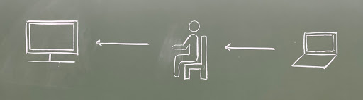
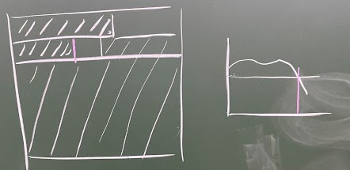

背景
現代人は、自分自身の意志によって主体的に生きていると信じ込んている。自分は外部と関わっていても、その「核」は外部ではなく、自分の中にこそあると信じ込んている。自分の一挙手一投足は、価値判断は、自分の意志によって決めていると信じ込んでいる。
しかし、データ化が進行する現代、SNSのフォロー、Amazonリコメンドなど、外部には耳ざわりのよい刺激がたくさんある。エコーチェンバー効果といった学術的な知見を引くまでもなく、それらは私達の好みや思考に深く入り込み、根を張っている。
現代人は、ほんとうに自分で考え、価値を判断し、行動を決めているのだろうか。「主体」なるものは、ほんとうに人間の中にあるのだろうか。それは、もしかするとSNSやAmazonリコメンドにこそあるのではなかろうか。
作品における立場
本作品は、人間から主体性を収奪し、外部から情報を受け取るだけのセンサ作用を可視化するインスタレーションである。
本作品では、外部刺激によって理性の象徴とされる脳の動きを制御する。ここで外部のコンピュータは、人間の脳を手段として用いて、コンピュータ自身の目的を遂行する。
人間の脳は主体的な行動ではなく外部の意図に従って動作し、本作品の出力に人間の意思は介在しない。本作品において人間は、ただコンピュータからの入力を伝達するセンサにすぎない。
プロセス
- 主体であるプログラムは、画像を音情報に変換し、被験者に与える
- 被験者は、目の開閉により音情報を脳波に変換する
- プログラムは、被験者の脳波の変動を読み取り、画像に変換する
画像描画の仕組み
人間は目を開くことによってα波の振幅が低下する。そのため、目の開閉によってα波の振幅の大きさを操作することができる。
本作品では、音を用いて被験者に目を開けさせることで、一時的にα波の振幅を低下させる。
描画プロセスでは、α波の振幅低下をトリガーに描画色を白から黒へ変化させる。
この手法によって、各行ごとに異なるタイミングで描画色を変化させることで、入力画像と同じものを出力へ伝達させる。
使用ツール等
開発言語
Processing GitHub使用機材
muse - the brain sensing headband Muse HP
Muse HP